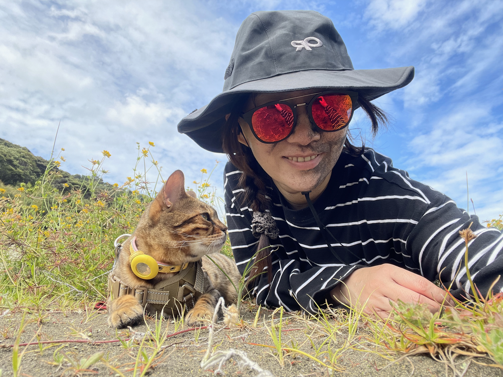
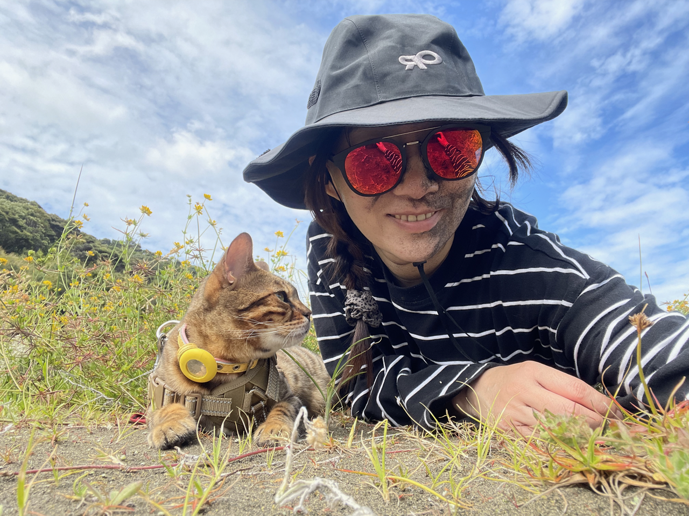

Evie Cheung
Auckland, New Zealand · +64 27 368 2825 ·
eviecheung1@gmail.com ·
linkedin.com/in/evie-cheung
Experienced data professional with a strong foundation in data analysis, data modelling, ETL pipeline development, and stakeholder engagement. Skilled in translating business requirements into technical solutions across financial services, insurance, and retail domains. Proven ability to build scalable data infrastructure, conduct in-depth analysis, and deliver actionable insights using SQL, Python, Power BI and modern cloud data stack tools including Snowflake, dbt, and Databricks.
 
